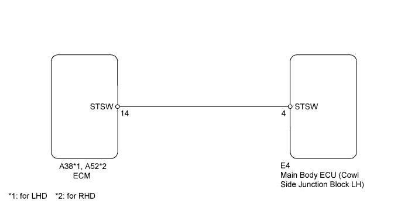
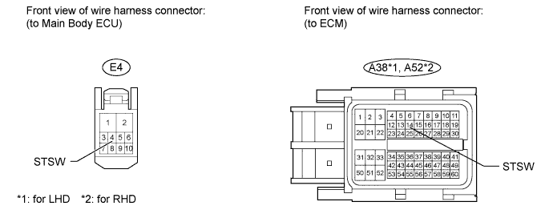
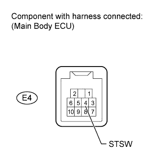

DTC B2275 STSW Monitor Malfunction |
| DTC Code | Detection Condition | Trouble Area |
| B2275 | The engine start request signal circuit inside the main body ECU or other related circuit is malfunctioning. |
|

| 1.CHECK WHETHER DTC OUTPUT RECURS |
Clear the DTCs (Click here).
Depress the brake pedal (for A/T) or clutch pedal (for M/T) with the engine switch on (IG), wait at least 15 seconds, and check whether DTC B2275 is output.
| Result | Proceed to |
| DTC B2275 output | A |
| No DTC output | B |
|
| ||||
| A | |
| 2.CHECK HARNESS AND CONNECTOR (MAIN BODY ECU - ECM) |

Disconnect the E4 main body ECU connector.
Disconnect the A38 (for LHD) or A52 (for RHD) ECM connector.
Measure the resistance according to the value(s) in the table below.
| Tester Connection | Condition | Specified Condition |
| E4-4 (STSW) - A38-14 (STSW)*1 E4-4 (STSW) - A52-14 (STSW)*2 | Always | Below 1 Ω |
| E4-4 (STSW) or A38-14 (STSW) - Body ground*1 E4-4 (STSW) or A52-14 (STSW) - Body ground*2 | Always | 10 kΩ or higher |
|
| ||||
| OK | |
| 3.INSPECT MAIN BODY ECU |
 |
Measure the voltage according to the value(s) in the table below.
| Tester Connection | Condition | Specified Condition |
| E4-4 (STSW) - Body ground | Brake pedal depressed with shift lever in P, engine switch pushed once | 11 to 14 V |
| Tester Connection | Condition | Specified Condition |
| E4-4 (STSW) - Body ground | Clutch pedal depressed, engine switch pushed once | 11 to 14 V |
| Result | Proceed to |
| Outside specified range | A |
| Within specified range (for 1GR-FE) | B |
| Within specified range (for 2UZ-FE) | C |
| Within specified range (for 1VD-FTV) | D |
|
| ||||
|
| ||||
|
| ||||
| A | ||
| ||